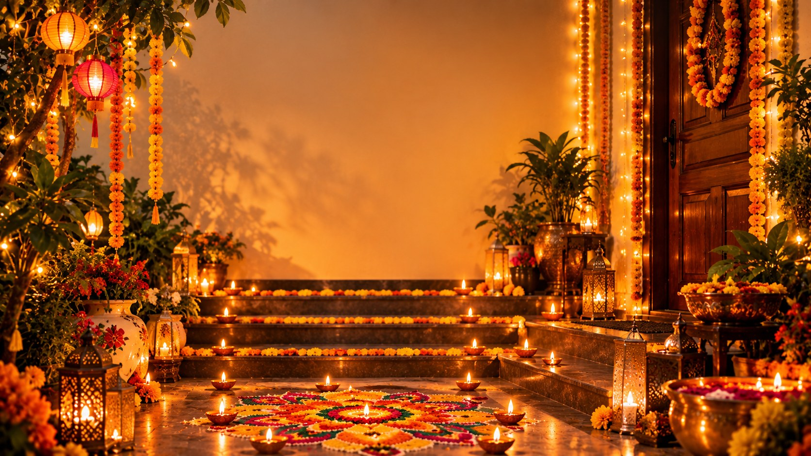

Diwali Decoration Ideas at Home: Diyas, Lights & Simple Decor
Published October 10, 2026 · Updated October 10, 2026 · By EventBuzz Team

Decorating for Diwali is really about one thing: light finding its way into every corner. The most beautiful Diwali homes are rarely the most expensive ones; they are the ones where diyas, fairy lights and flowers are placed with intention. This guide walks through Diwali decoration ideas at home room by room, with budget-friendly touches you can finish in a weekend before Diwali on Sunday, November 8, 2026.
The Entrance: Your Diwali First Impression
Tradition says the entrance welcomes Goddess Lakshmi, so give it your best hour. Sweep and wash the doorstep, then lay your finest rangoli (our Rangoli Designs for Diwali guide makes it easy). Hang a toran of fresh marigold and mango leaves above the door, place brass urli bowls with floating flowers and candles on either side, and line the steps with diyas. Small painted footprints leading inward are a beloved touch that children adore helping with.
Diyas: Placing the Light
- Trails and borders: Line pathways, stairs, window sills and the rangoli edge with evenly spaced diyas.
- Clusters: Group three to five diyas on brass plates in corners that stay dark; clusters read as intentional decor, singles read as accidents.
- Painted diyas: Plain clay diyas painted in gold, red and green with simple dots become decor pieces children can proudly make.
- Safety first: Keep flames away from curtains and paper decor, use sturdy holders on flat surfaces, and switch to LED tea lights anywhere toddlers or pets roam.
Fairy Lights and Lanterns
Warm white fairy lights are the backbone of modern Diwali decor. Drape them along balcony rails, window frames and curtain rods; coil them inside glass jars and bottles for instant lanterns; and hang paper or metal lanterns (kandils) at varied heights over the entrance and living room. One colour temperature everywhere — warm — keeps the look rich rather than disco. Test every string a week early, on Dhanteras weekend at the latest, so dead bulbs never surprise you on the night.
The Puja Corner
Give Lakshmi Puja a dedicated, beautiful stage: a clean shelf or low table covered with red or maroon cloth, idols placed on a raised platform, a kalash, fresh flowers, and a backdrop of fairy lights or a marigold curtain. Add a thali with diya, incense, kumkum, rice and sweets ready before the evening of Sunday, November 8. Our Diwali 2026 calendar guide explains the puja and each festival day.
Living Room and Dining Touches
- Centrepiece: A brass bowl of water with floating flowers and candles anchors the coffee or dining table.
- Textiles: Swap in cushion covers and table runners in maroon, gold and deep green; one festive textile per room is enough.
- Sweet display: Arrange mithai on your prettiest plates under a glass dome — decor you can eat, straight from our Diwali Sweets & Recipes ideas.
- Wall glow: Frame a doorway or mirror with a marigold garland and let the lights do the rest.
Balcony and Windows
Apartments shine from the street when balconies get attention: railing wrapped in fairy lights, hanging lanterns at the corners, diyas along the floor edge and a small rangoli by the door. Window silhouettes of diyas or peacocks, cut from card and backlit, delight the whole neighbourhood and cost almost nothing.
Budget Decorating Plan
- Two weekends before: Deep clean, repair lights, list what you already own.
- One weekend before: Buy only the gaps: fresh flowers, diyas, one or two new pieces. Paint old diyas instead of replacing them.
- Dhanteras (Fri Nov 6): Hang lights and lanterns; set the puja corner.
- Choti Diwali (Sat Nov 7): Powder rangoli, doorway toran, jar lanterns placed.
- Diwali (Sun Nov 8): Fresh flowers, petal rangoli, light everything at dusk, and photograph your work for the Diwali Images collection.
Frequently Asked Questions
How can I decorate for Diwali on a small budget?
Reuse fairy lights and brass you own, paint last year's clay diyas, make jar lanterns from kitchen glass, and spend only on fresh flowers and a few new diyas. The entrance plus one lit corner already transforms a home.
When should I start decorating for Diwali 2026?
Deep clean two weekends ahead, hang lights around Dhanteras (Friday, November 6), and finish rangoli and fresh flowers on November 7 and 8. Spreading it out keeps decorating joyful instead of frantic.
Are LED lights okay for Diwali decor?
Yes. Warm white LED strings and tea lights give the same glow with less heat and no fire risk, and they are the smart choice near fabrics, children and pets. Many families mix real diyas at the puja with LEDs elsewhere.
What is a toran and where does it hang?
A toran is a garland, traditionally of marigold flowers and mango leaves, hung across the top of the main door. It signals welcome, freshness and festivity to everyone who enters.
How do I decorate a small apartment for Diwali?
Focus on three spots: the entrance (mini rangoli and toran), one window or balcony (fairy lights and lanterns), and the puja corner. Vertical decor and warm light make small spaces feel festive without clutter.
Conclusion
Clean a doorway, hang a garland, line the steps with light, and your home is ready to welcome the festival. Start this weekend and Diwali evening will find you relaxed, camera in hand, in the best-lit house on the street.
Happy Diwali 2026 — may every corner of your home glow.
Diwali Decor Picks
Diyas, lights and garlands to bring these decoration ideas home.


Prices shown at the time of publishing and can change. Links take you to AliExpress, where shipping and delivery details are shown.